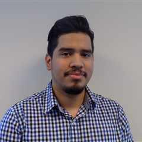

|  |
David EnriquezSoftware Implementation Specialist at Laerdal SUNY Rockland College graduate offering a strong academic background in computer information systems. Consistently recognized for technical troubleshooting skills used to rapidly and cost-effectively resolve challenging technical issues. I quickly learn and master new technology; equally successful in both team and self-directed settings; and proficient in a range of computer systems, languages, tools and testing methodologies. |
| vSim Software | ⭐⭐⭐⭐⭐ |
| Software Implementation | ⭐⭐⭐⭐⭐ |